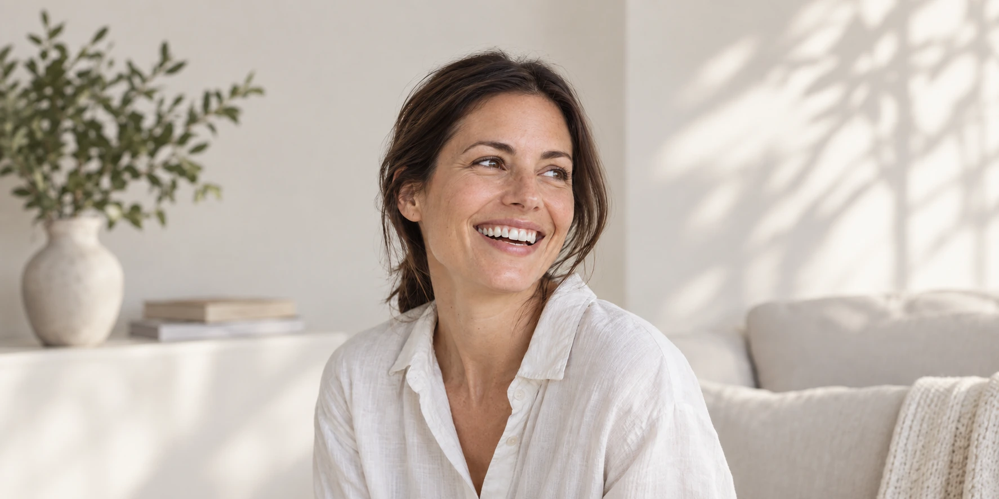
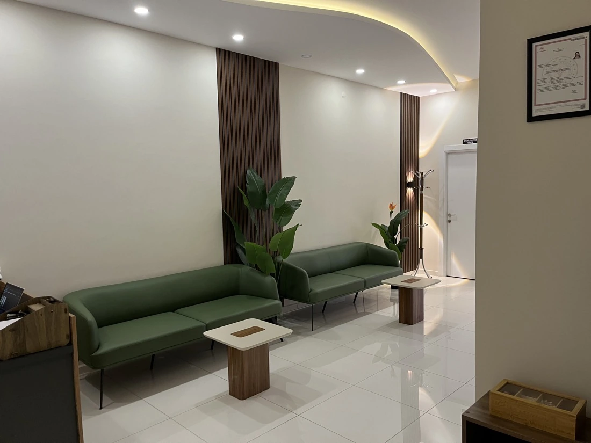
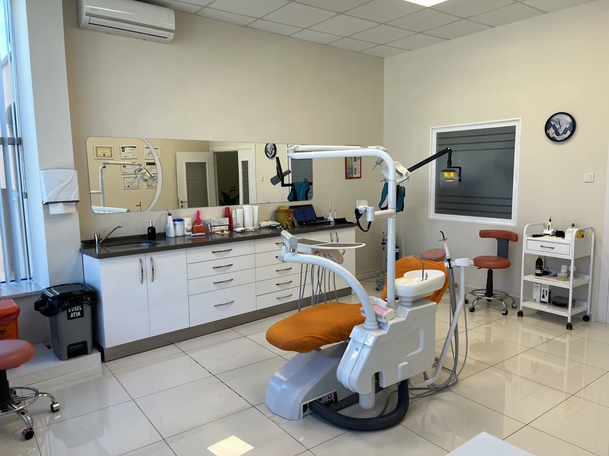
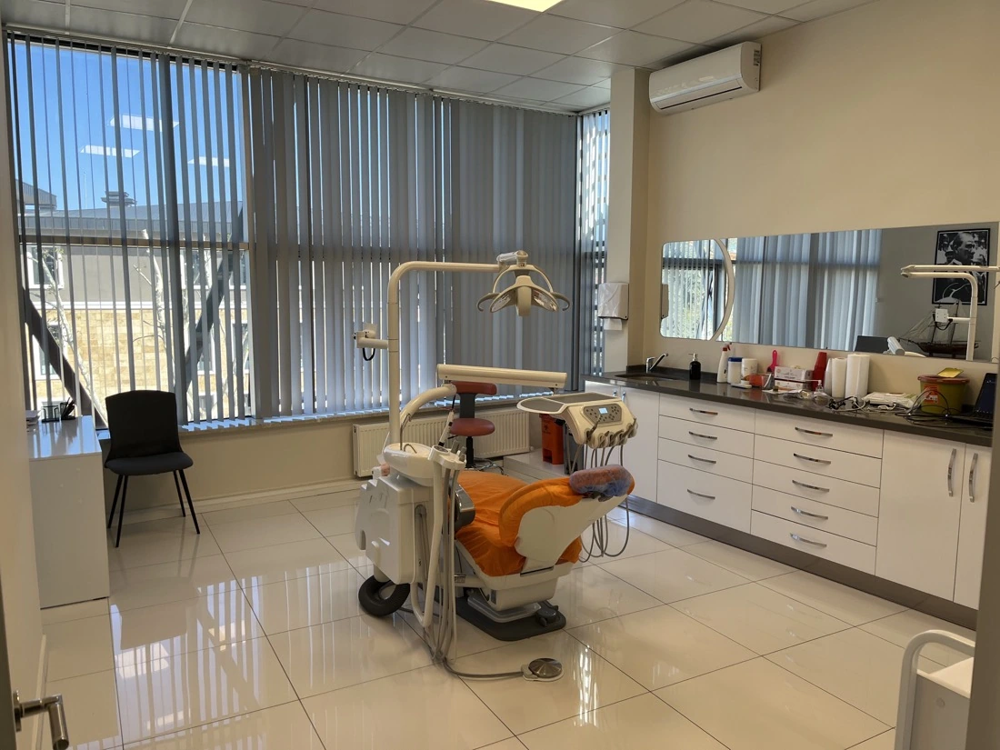
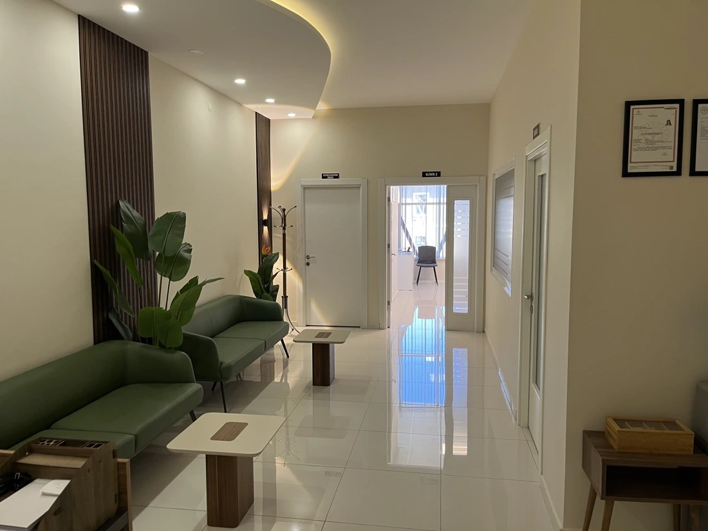
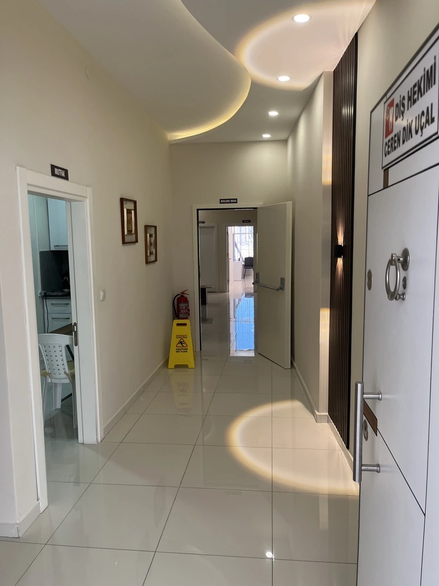
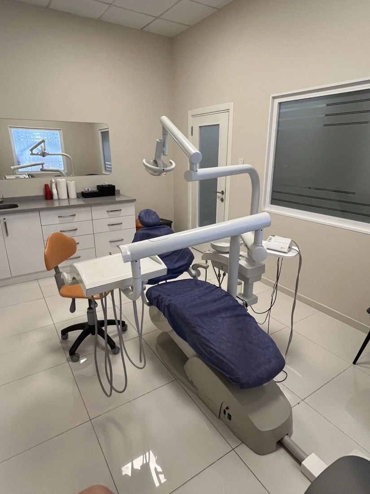
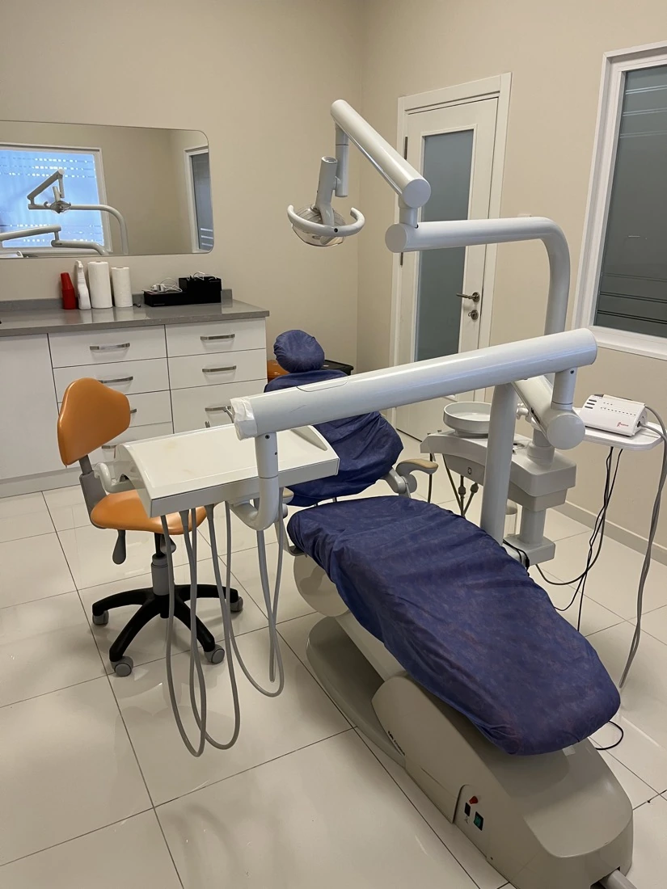

Kompozit Dolgu
Çürük veya hasarlı dişleri doğal renge uyumlu materyalle onarır.

İhtiyacınızı dinleyen, seçenekleri açıkça anlatan ve her adımda kendinizi güvende hissettiren bir diş tedavisi deneyimi.

Ceren Dik Uçal Muayenehanesi Pzt–Cmt 10:00–18:00 · Gölcük · Kocaeli
Yaklaşımımız
Diş Hekimi Ceren Dik Uçal, Bolu Abant İzzet Baysal Üniversitesi Diş Hekimliği Fakültesi'nden 2016 yılında mezun oldu. 2016'dan beri Gölcük'te hastalarına hizmet veriyor.
2020 yılında kurulan muayenehane; anlaşılır iletişimi, kişiye özel tedavi planını ve uzun vadeli ağız sağlığını merkezine alıyor.

Tedaviler
Koruyucu uygulamalardan estetik çözümlere, ağız sağlığınız için kapsamlı hizmet.
Çürük veya hasarlı dişleri doğal renge uyumlu materyalle onarır.
Enfekte dokuyu temizleyerek doğal dişin korunmasına yardımcı olur.
Plak ve diş taşlarını uzaklaştırarak diş eti sağlığını destekler.
Diş rengini kontrollü biçimde açarak aydınlık bir gülüş sağlar.
Eksik dişlerin işlevini ve görünümünü uygun çözümlerle tamamlar.
Korunamayan dişler için planlı ve kontrollü çekim uygulanır.
Küçük kırık, çatlak ve aralıkları diş rengine uyumlu biçimde düzenler.
Dayanıklılık ile doğal görünümü bir araya getiren bir seçenektir.
Dişlerin şekil, renk ve görünümünü iyileştiren ince kaplamalardır.
Klinik
Gölcük merkezde, konforlu bir tedavi deneyimi düşünülerek tasarlanmış muayenehanemiz.






Google yorumları
Google Maps üzerinde hastalarımızın paylaştığı gerçek deneyimlerden kısa alıntılar.
 Google yorumları
5,0★★★★★
15 değerlendirme
Tüm yorumları görün ↗
Google yorumları
5,0★★★★★
15 değerlendirme
Tüm yorumları görün ↗
“Ceren Hanım’ın iş disiplini, titizliği ve tedavilerinden memnun kaldım. Tedavi öncesinde ve sonrasında bilgilendirdi.”
“Tek kelimeyle harika. Hiç ağrı duymadan kanal tedavim ve dolgum yapıldı. Hocamız çok ilgilendi ve sürekli bilgilendirdi.”
“Gerçekten çok memnun kaldığım bir tedavi gördüm. Kesinlikle tavsiye ediyorum. Muayenehanesi çok temiz ve ferah.”
“Sürekli bilgi vererek korkmanıza engel olacak yaklaşımıyla, işini titizlikle yapan bir hekim. Dolgu için gittim, memnun kaldım.”
“Hayatımda ilk defa diş doktoruna gittim, hiç korkmadım. Hastayı bilgilendirme, hijyen ve ilgi gerçekten çok iyiydi.”
İletişim
Sorularınız ve randevu talebiniz için bizi arayabilir, kliniğe yol tarifi alabilirsiniz.
Sıkça sorulanlar
Aradığınız yanıt burada yoksa bize telefonla ulaşabilirsiniz.
Diş taşı temizliği dişlere zarar vermez; plak ve diş taşlarını uzaklaştırarak diş ve diş eti sağlığının korunmasına yardımcı olur.
Diş fırçasını diş eti ile diş arasına yaklaşık 45 derece açıyla yerleştirin. Küçük dairesel hareketlerle tüm yüzeyleri ve dilinizi en az iki dakika fırçalayın.
Kanal tedavisi çoğunlukla 1–3 seansta tamamlanır. Lokal anestezi sayesinde işlem sırasında genellikle ağrı hissedilmez; sonrasında geçici hassasiyet olabilir.
Sonucun kalıcılığı kişiye ve yaşam alışkanlıklarına göre değişir. Düzenli ağız bakımı ve renklendirici ürünleri sınırlamak kalıcılığı artırabilir.